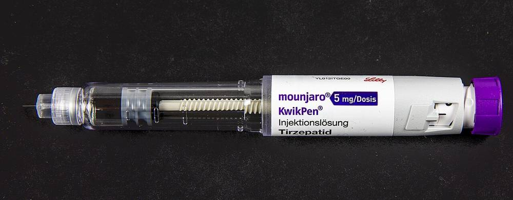
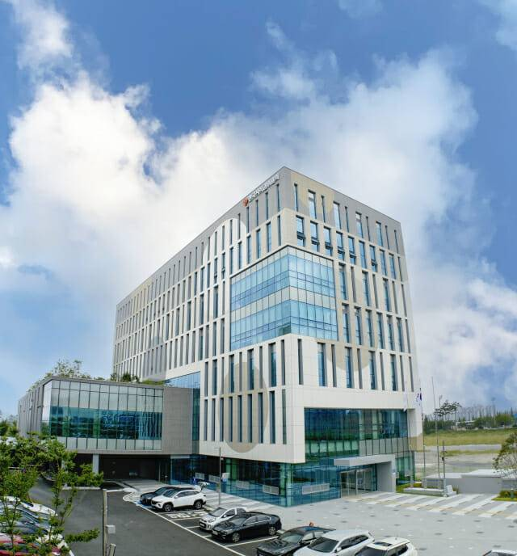
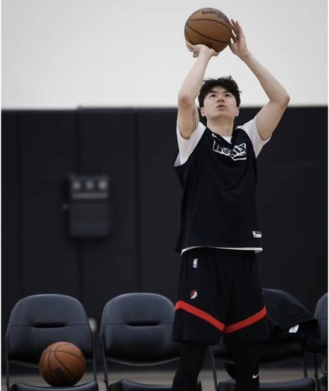
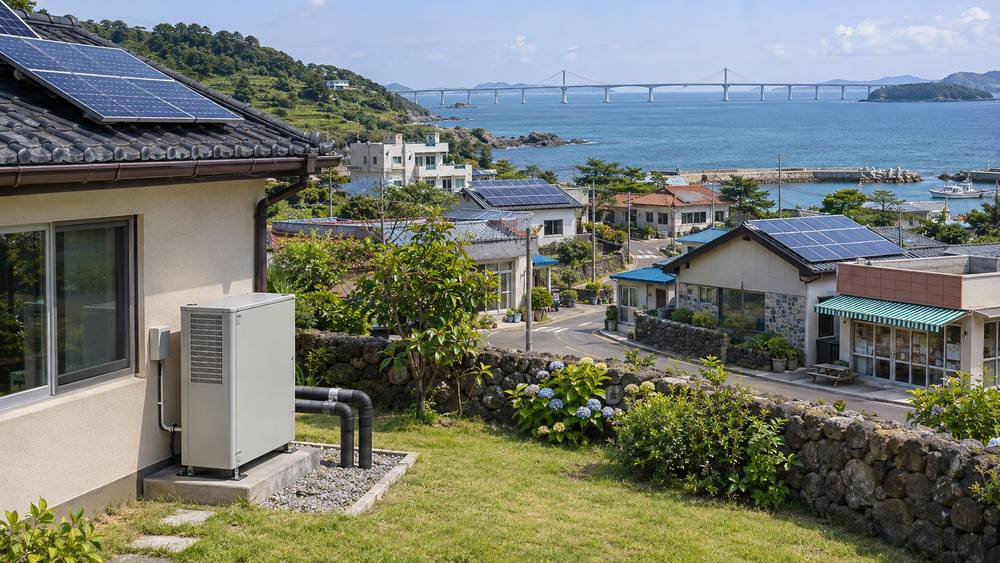

대전 한밭종합운동장 공영주차장 태양광, 국비 공모 뽑히고도 지방비 없어 포기…시의회 "사업비·용량 자료마다 달라"
박은희 시의원, 시설관리공단 행정사무감사서 "총사업비 6억 원 기준 서류 금액 제각각"…투명한 업체 선정 절차 주문



엑소 카이·세훈, 첫 유닛 미니앨범 'Waking Up The City' 12월 1일 발매
동명 타이틀곡과 두 사람 솔로곡 등 7곡…내년 1월 9~10일 서울서 팬콘 투어 'SILENT CITY' 시작
프로야구 FA 승인 선수 22명 공시, 17일부터 전 구단 협상…KT 6명 최다
자격 선수 28명 중 6명은 신청 안 해…구단별 외부 FA 영입 한도 3명, A등급 보상은 연봉 200%+선수 1명 또는 300%
오늘 주목할 소식
- 희귀·중증 난치질환 학생, 정기진료로 빠진 날 '출석인정 결석'으로…교육부 17일부터 입법예고
- 울주군 구영공원 공영주차장 태양광 17일 착공…20m 앞 아파트 주민 "빛 반사 우려, 철회하라"
- 김은중호 U-21 대표팀, 17일 천안서 멕시코와 2차 평가전…1차전 0-0 뒤 국내 팬 앞 첫 경기
- 안동 시민단체, 쇠제비갈매기 번식 모래섬서 집회…"K-water 안동댐 수상태양광 철회하라"
- 재생에너지 자립률 1.2% 여수, 태양광 주택 이격거리 300m→200m로…도로 이격 100m 규제는 없애 17일 본회의
- 김해 공영주차장·학교·산단에 태양광 늘리고 수익은 시민에게…시의회 토론회서 "설치 가능 부지부터 조사하자"
햇빛소득마을 더보기 ›
정치 더보기 ›
희귀·중증 난치질환 학생, 정기진료로 빠진 날 '출석인정 결석'으로…교육부 17일부터 입법예고
학교건강검사규칙 개정령안, 12월 28일까지 의견 수렴…학생건강기록부는 대국민나이스·정부24에서 온라인 발급
정책 더보기 ›
희귀·중증 난치질환 학생, 정기진료로 빠진 날 '출석인정 결석'으로…교육부 17일부터 입법예고
학교건강검사규칙 개정령안, 12월 28일까지 의견 수렴…학생건강기록부는 대국민나이스·정부24에서 온라인 발급
산업·경제 더보기 ›
강원 접경 4개 군 "군 유휴부지·햇빛·물로 에너지 연대"…영농형 태양광 군민펀드·발전 수익 기본소득 제안
철원·화천·양구·인제 정책포럼…"철원 농지 60%가 외지인 소유, 발전 수익 밖으로 샌다", 철원 태양광·화천 양수발전 잇는 '접경지역 에너지 협력권' 구상
금융 더보기 ›
병원 '실손보험 된다' 허위·과장 광고 금지 추진…환자 알선 의료인 자격정지 2개월→6개월
의료법 시행령·시행규칙 개정안 규제합리화위원회 본심사 앞둬…보험업계 "과잉진료 줄 것" 기대, 병원협회 "기준 불명확, 과도한 규제" 반발
사회 더보기 ›
안동 시민단체, 쇠제비갈매기 번식 모래섬서 집회…"K-water 안동댐 수상태양광 철회하라"
11개 기관·단체 60여 명 참여…수자원공사는 90MW→45MW로 줄이고 상류 도목리로 입지 변경 제시했지만 "새 비행 범위 수십㎞, 옮겨도 영향 못 피해"
지역 더보기 ›
대전 한밭종합운동장 공영주차장 태양광, 국비 공모 뽑히고도 지방비 없어 포기…시의회 "사업비·용량 자료마다 달라"
박은희 시의원, 시설관리공단 행정사무감사서 "총사업비 6억 원 기준 서류 금액 제각각"…투명한 업체 선정 절차 주문
오피니언 더보기 ›
"싸고 빠른 발전소는 수요 속에 있다"…전력수요 100GW 시대, 저녁엔 줄이고 낮엔 늘리는 '부하이전' 키우자
우종률 고려대 에너지환경대학원 교수 기고…12차 전기본 수요관리 목표 20.8GW를 실제 자원으로 만들 세 가지 조건
시민에너지 더보기 ›
나주 대실마을 주민참여형 에너지 자립 모델, 아시아 10개국 에너지 관계자 35명에 소개…세네갈 500만 달러 ODA로도 이어져
ADB 초청 방문단, 태양광·소형풍력·ESS로 농기계 충전과 마을회관·스마트팜 운영하는 리빙랩 둘러봐…햇빛소득마을 추진 상담도
연예·스포츠 더보기 ›
엑소 카이·세훈, 첫 유닛 미니앨범 'Waking Up The City' 12월 1일 발매
동명 타이틀곡과 두 사람 솔로곡 등 7곡…내년 1월 9~10일 서울서 팬콘 투어 'SILENT CITY' 시작
大田・ハンバッ総合運動場の公営駐車場太陽光、国費公募に選ばれながら地方費不足で断念…市議会「事業費・容量が資料ごとに違う」
朴恩姫市議、施設管理公団の行政事務監査で「総事業費6億ウォン基準の書類の金額がばらばら」…透明な業者選定手続きを要求




蔚州郡・九英公園公営駐車場の太陽光、17日着工へ…20m先のマンション住民「反射光が心配、撤回を」
郡「反射率5.3%のパネル・傾斜9度、手続きはすべて順守」…住民「郡が立法予告した住宅離隔200mの10分の1」

安東の市民団体、コアジサシ繁殖の砂州で集会…「K-waterの安東ダム水上太陽光を撤回せよ」
11の機関・団体から約60人参加…水資源公社は90MW→45MWに縮小し上流の道木里への立地変更を示したが「飛行範囲は数十km、移しても影響は避けられない」
今日の注目ニュース
- 再エネ自立率1.2%の麗水、太陽光の住宅離隔距離を300m→200mに…道路離隔100m規制は廃止、17日本会議へ
- 金海市、公営駐車場・学校・産業団地に太陽光を広げ収益は市民へ…市議会討論会「設置可能な敷地の調査から」
- 全北農業技術院、農業振興区域に営農型太陽光を設置する際に農地法の手続きを欠落…道の監査で12件の行政上の処分
- 羅州・大実村の住民参加型エネルギー自立モデル、アジア10カ国のエネルギー関係者35人に紹介…セネガルへの500万ドルODAにもつながる
- 安城市の「公有地活用・住民参加型太陽光」、地方自治政策大会で受賞…体育施設・公営駐車場に市民協同組合の発電所
- 江原・高城の第1号「太陽光所得村」長新1里400kW、来月完工…年8,129万ウォンの収入見込み
太陽光所得村 もっと見る ›
政治 もっと見る ›
安城市の「公有地活用・住民参加型太陽光」、地方自治政策大会で受賞…体育施設・公営駐車場に市民協同組合の発電所
13日に国会舍廊斎で市長・郡守・区庁長協議会長賞…近隣の村の参加と収益の村の福祉への活用を審査基準に、今後は仮想発電所で域内企業に安い電気を供給する構想
政策 もっと見る ›
産業団地の入居企業、工場完成前でも屋根・遊休地を太陽光向けに賃貸可能に…李彦周議員が産業集積法改正案を発議
産業団地の太陽光は約2.1GWで2030年目標6GWの35%水準…設計段階から太陽光を反映し民間投資を呼び込む狙い、系統接続・契約責任は課題
産業・経済 もっと見る ›
江原道の境界地域4郡「軍の遊休地・日差し・水でエネルギー連帯を」…営農型太陽光の郡民ファンド、発電収益を基本所得に
鉄原・華川・楊口・麟蹄の政策フォーラム…「鉄原の農地の6割は外部所有、発電収益が外へ流出」、鉄原の太陽光と華川の揚水発電を結ぶ「境界地域エネルギー協力圏」構想
金融 もっと見る ›
江原道の境界地域4郡「軍の遊休地・日差し・水でエネルギー連帯を」…営農型太陽光の郡民ファンド、発電収益を基本所得に
鉄原・華川・楊口・麟蹄の政策フォーラム…「鉄原の農地の6割は外部所有、発電収益が外へ流出」、鉄原の太陽光と華川の揚水発電を結ぶ「境界地域エネルギー協力圏」構想
社会 もっと見る ›
安東の市民団体、コアジサシ繁殖の砂州で集会…「K-waterの安東ダム水上太陽光を撤回せよ」
11の機関・団体から約60人参加…水資源公社は90MW→45MWに縮小し上流の道木里への立地変更を示したが「飛行範囲は数十km、移しても影響は避けられない」
地域 もっと見る ›
大田・ハンバッ総合運動場の公営駐車場太陽光、国費公募に選ばれながら地方費不足で断念…市議会「事業費・容量が資料ごとに違う」
朴恩姫市議、施設管理公団の行政事務監査で「総事業費6億ウォン基準の書類の金額がばらばら」…透明な業者選定手続きを要求
オピニオン もっと見る ›
「安くて速い発電所は需要の中にある」…電力需要100GW時代、夕方は減らし昼は増やす「負荷移動」を育てよう
ウ・ジョンリュル高麗大学エネルギー環境大学院教授が寄稿…第12次電力需給基本計画の需要管理目標20.8GWを実際の資源にする3つの条件
市民エネルギー もっと見る ›
羅州・大実村の住民参加型エネルギー自立モデル、アジア10カ国のエネルギー関係者35人に紹介…セネガルへの500万ドルODAにもつながる
ADB招請訪問団が、太陽光・小型風力・ESSで農機の充電や村の会館・スマートファームを運営するリビングラボを見学…太陽光所得村の推進相談も
大田韩밭综合运动场公共停车场光伏：入选国家补助项目却因地方配套资金不足而放弃…市议会：“各份材料的事业费和容量不一致”
朴恩姬市议员在设施管理公团行政事务监察中指出“以总事业费6亿韩元为基准的文件金额各不相同”…要求建立透明的企业遴选程序
蔚州郡九英公园公共停车场光伏17日开工…20米外公寓居民：“担心反光，请撤回”
郡政府：“采用反射率5.3%的组件、倾角9度，程序全部合规”…居民：“只有郡政府立法预告的住宅间距200米的十分之一”
韩国安东市民团体在小燕鸥繁殖沙洲集会："K-water撤回安东大坝水上光伏"
11个机构和团体约60人参加…水资源公社已从90兆瓦缩减至45兆瓦并提出迁往上游道木里，但团体称"飞行范围达数十公里，迁址也难避影响"
阳光收入村 更多 ›
政治 更多 ›
安城市“公有土地居民参与型太阳能”获地方自治政策大会奖…在体育设施、公营停车场建市民合作社电站
13日在国会舍廊斋获市长郡守区厅长协议会会长奖…以周边村庄参与和收益用于村庄福利为评审标准，今后拟通过虚拟电厂向本地企业廉价供电
政策 更多 ›
产业园区入驻企业工厂建成前也可出租屋顶和闲置用地发展太阳能…李彦周议员提出产业集聚法修正案
产业园区太阳能约2.1GW，仅为2030年目标6GW的35%…旨在从设计阶段纳入太阳能吸引民间投资，并网与合同责任仍是课题
产业·经济 更多 ›
江原道边境四郡：以军队闲置用地、阳光和水资源结成“能源联盟”…提议设立农光互补郡民基金、发电收益转为基本收入
铁原、华川、杨口、麟蹄政策论坛…“铁原60%农地归外地人所有，发电收益外流”，提出连接铁原光伏与华川抽水蓄能的“边境地区能源合作圈”
金融 更多 ›
江原道边境四郡：以军队闲置用地、阳光和水资源结成“能源联盟”…提议设立农光互补郡民基金、发电收益转为基本收入
铁原、华川、杨口、麟蹄政策论坛…“铁原60%农地归外地人所有，发电收益外流”，提出连接铁原光伏与华川抽水蓄能的“边境地区能源合作圈”
社会 更多 ›
韩国安东市民团体在小燕鸥繁殖沙洲集会："K-water撤回安东大坝水上光伏"
11个机构和团体约60人参加…水资源公社已从90兆瓦缩减至45兆瓦并提出迁往上游道木里，但团体称"飞行范围达数十公里，迁址也难避影响"
地方 更多 ›
大田韩밭综合运动场公共停车场光伏：入选国家补助项目却因地方配套资金不足而放弃…市议会：“各份材料的事业费和容量不一致”
朴恩姬市议员在设施管理公团行政事务监察中指出“以总事业费6亿韩元为基准的文件金额各不相同”…要求建立透明的企业遴选程序
评论 更多 ›
“便宜又快的电厂就在需求之中”…电力需求100GW时代，应发展晚间少用、白天多用的“负荷转移”
高丽大学能源环境研究生院教授禹钟律撰文：让第12次电力供需基本计划需求管理目标20.8GW成为真正资源的三个条件
市民能源 更多 ›
罗州大实村居民参与型能源自立模式向亚洲10国35名能源官员展示…并延伸为500万美元塞内加尔官方发展援助项目
亚洲开发银行邀请的访问团参观以太阳能、小型风电和储能为农机充电、运营村会馆和智慧农场的生活实验室…并咨询“阳光收入村”推进方法
Daejeon Stadium Car-Park Solar Won a National Grant, Then Was Dropped for Lack of Local Funds; Councillor Says Cost and Capacity Differ by Document
Councillor Park Eun-hee tells the facilities corporation that figures based on a KRW 600 million budget do not match across filings, and calls for a transparent supplier selection process
Ulju County to Break Ground on Car-Park Solar on the 17th; Residents 20 m Away Demand Withdrawal over Glare
County: 5.3% reflectance panels at a 9-degree tilt, all procedures followed — Residents: one-tenth of the 200 m setback the county itself has proposed
Andong civic groups rally on tern breeding sandbar, demand K-water drop Andong Dam floating solar plan
About 60 members from 11 organizations join; water agency has cut the plan from 90 MW to 45 MW and proposed moving upstream, but groups say terns range tens of kilometers
Today's highlights
- Yeosu, at 1.2% renewable self-sufficiency, cuts solar setback from homes to 200 meters and scraps 100-meter road rule; final vote Nov. 17
- Gimhae weighs solar on car parks, schools and industrial parks with profits returned to residents; council forum urges site survey first
- Jeonbuk Agricultural Research Institute skipped farmland law procedures when installing agrivoltaics in an agricultural promotion zone; provincial audit issues 12 administrative actions
- Naju's Daesil village resident-participation energy self-sufficiency model shown to 35 energy officials from 10 Asian countries; it has also led to a $5 million ODA project in Senegal
- Anseong's resident-participation solar on public land wins local government policy award; citizen co-ops build plants on sports facilities and public car parks
- Goseong's first sunlight income village, Jangsin 1-ri, to complete 400kW plant next month with expected income of 81.29 million won a year
Sunlight Income Village More ›
- Goseong's first sunlight income village, Jangsin 1-ri, to complete 400kW plant next month with expected income of 81.29 million won a year
- Ongjin County head says grid connection is the biggest hurdle for island renewables; Sunlight Income Village push at Nae 7-ri resumes
- 17 Cheongju villages apply in third round of 'Sunlight Income Village' program: 16,082kW of solar, 23.6 billion won
Politics More ›
Anseong's resident-participation solar on public land wins local government policy award; citizen co-ops build plants on sports facilities and public car parks
Award from the national council of mayors and county heads at the National Assembly on the 13th; operators judged on nearby villages' participation and use of profits for village welfare, with a future virtual power plant to supply cheap power to local firms
- Government targets 100,000 homes for balcony solar, but demand reaches only 13.6%; LH opts out as apartment complexes cite installation and upkeep burdens
- Bill would let industrial-park tenants lease roofs and idle land for solar before factories are finished
- Defense ministry unveils first energy transition plan with 12 tasks in four areas, but no budget or timeline
- South Australian apartment residents to get shared solar and batteries: A$17.8 million federal-state package covers half the cost with grants, the rest with zero-interest loans
Policy More ›
Bill would let industrial-park tenants lease roofs and idle land for solar before factories are finished
Industrial-park solar stands at about 2.1GW, roughly 35% of the 6GW goal for 2030; the aim is to draw private investment by designing solar in from the start, but grid access and contract liability remain open questions
- Defense ministry unveils first energy transition plan with 12 tasks in four areas, but no budget or timeline
- Legal research institute says Korea's ₩1,000 trillion K-GX plan lacks a law to back corporate decarbonization
- Public buildings may cool to 26°C and heat to 20°C as ministry eases limits by 2 degrees
- Seoul-area data centers face higher grid impact bar, 70 to 75 points, from Nov. 16
Industry & Economy More ›
Four Gangwon border counties urged to form an 'energy alliance' of idle military land, sun and water, with a citizens' agrivoltaics fund paying a basic income
Cheorwon-Hwacheon-Yanggu-Inje policy forum: '60% of Cheorwon farmland is owned by outsiders, so power profits leak out'; proposal for a border-region energy zone linking Cheorwon solar and Hwacheon pumped storage
- IEA cuts Korea's five-year offshore wind outlook by 41%, citing grid and permitting delays; 100 GW renewables goal for 2030 also out of reach
- Partners review technology and financing for Ulsan's 375 MW 'East Blue Power' floating offshore wind project
- Jeju's first climate-economy vice governor: 'Turn wind and sun into residents' income' with a province-wide citizens' fund
- Jeju Energy Corporation starts pilot turning surplus wind power into hydrogen with ALK and PEM electrolysers plus storage
Finance More ›
Four Gangwon border counties urged to form an 'energy alliance' of idle military land, sun and water, with a citizens' agrivoltaics fund paying a basic income
Cheorwon-Hwacheon-Yanggu-Inje policy forum: '60% of Cheorwon farmland is owned by outsiders, so power profits leak out'; proposal for a border-region energy zone linking Cheorwon solar and Hwacheon pumped storage
- South Australian apartment residents to get shared solar and batteries: A$17.8 million federal-state package covers half the cost with grants, the rest with zero-interest loans
- Korea lent 37 trillion won to overseas fossil fuels but gave 7.76 trillion won in climate finance, Green Korea says
- Partners review technology and financing for Ulsan's 375 MW 'East Blue Power' floating offshore wind project
- Jeju's first climate-economy vice governor: 'Turn wind and sun into residents' income' with a province-wide citizens' fund
Society More ›
Andong civic groups rally on tern breeding sandbar, demand K-water drop Andong Dam floating solar plan
About 60 members from 11 organizations join; water agency has cut the plan from 90 MW to 45 MW and proposed moving upstream, but groups say terns range tens of kilometers
- Government targets 100,000 homes for balcony solar, but demand reaches only 13.6%; LH opts out as apartment complexes cite installation and upkeep burdens
- 1,500 Daejeon residents join 'energy walk' ahead of World Conference on Photovoltaic Energy Conversion, running to Nov. 20
- Geochang finally removed from candidate corridor for Sinjangsu–Muju Yeongdong power line; residents' opposition committee to disband on 25th
- Residents under the water and power lines for Korea's chip cluster ask for a livelihood first — solar income, not pensions, offered in Hwasun
Regions More ›
Daejeon Stadium Car-Park Solar Won a National Grant, Then Was Dropped for Lack of Local Funds; Councillor Says Cost and Capacity Differ by Document
Councillor Park Eun-hee tells the facilities corporation that figures based on a KRW 600 million budget do not match across filings, and calls for a transparent supplier selection process
- Ulju County to Break Ground on Car-Park Solar on the 17th; Residents 20 m Away Demand Withdrawal over Glare
- Yeosu, at 1.2% renewable self-sufficiency, cuts solar setback from homes to 200 meters and scraps 100-meter road rule; final vote Nov. 17
- Gimhae weighs solar on car parks, schools and industrial parks with profits returned to residents; council forum urges site survey first
- Jeonbuk Agricultural Research Institute skipped farmland law procedures when installing agrivoltaics in an agricultural promotion zone; provincial audit issues 12 administrative actions
Opinion More ›
'The cheapest, fastest power plant lies in demand': expert urges load shifting for Korea's 100 GW era
Column by Korea University professor Woo Jong-ryul on three conditions for turning the 12th Basic Plan's 20.8 GW demand-management target into a real resource
- "Open Hampyeong's next century with an 8 GW renewable hub": civic leader proposes sunlight pension and 345 kV substation
- "Use renewable work to keep local firms alive while waiting for chip fabs": call to fast-track a Jeonnam-Gwangju energy corporation
- "Residents under transmission towers must count too": Seocheon and Boryeong brace for Saemangeum–Sinseosan 345 kV line
- "Public car-park solar should be owned and run by citizens": Incheon environmental group urges citizen-equity criteria in tenders
Citizen Energy More ›
Naju's Daesil village resident-participation energy self-sufficiency model shown to 35 energy officials from 10 Asian countries; it has also led to a $5 million ODA project in Senegal
ADB-invited delegation tours living lab using solar, small wind and ESS to charge farm machinery and run the village hall and smart farm, and gets advice on sunlight income villages
- Goseong's first sunlight income village, Jangsin 1-ri, to complete 400kW plant next month with expected income of 81.29 million won a year
- Pyeongchang takes first step toward a 'wind pension' with 200MW of publicly led onshore wind; agreement with EWP and Gangwon Development Corp. on the 18th
- Four Gangwon border counties urged to form an 'energy alliance' of idle military land, sun and water, with a citizens' agrivoltaics fund paying a basic income
- South Australian apartment residents to get shared solar and batteries: A$17.8 million federal-state package covers half the cost with grants, the rest with zero-interest loans